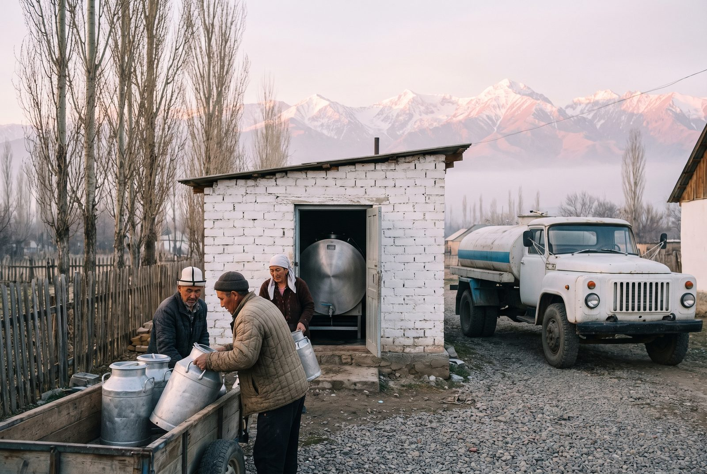

Bashkı bet / Fermerlerge
Sütüñüzdü bizge satıñız
Biz Talas öröönü jana tooloordogu ar kanday kölömdögü charbalardan uy jana echki sütün jıl boyu, biye sütün jayında satıp alabız. Süttü özübüz alıp ketip, tekshirip, on kün sayın tölöybüz.
2026-jıldın baaları
Kancha tölöybüz
2026-jıldın 1-aprelinen bashtap, litrine, kabıl aluu punktunda. Müchölör jıl ayagındagı koshumchanı da alat.
| Süt | Sortu | Litrinin baası | Shartı |
|---|---|---|---|
| Uy sütü | Ekstra | 3,85 som | may 3,6%dan jogoru, somatikalık kletkalar 300 000den az |
| Uy sütü | 1-sort | 3,45 som | may 3,2%dan jogoru, eki saattın ichinde muzdatılgan |
| Uy sütü | 2-sort | 2,90 som | oshol ele tañda tapshırılgan muzdatılbagan süt |
| Echki sütü | — | 4,60 som | tüshtük tooloor marshruttarında gana |
| Biye sütü | — | 9,80 som | maydan sentyabrga cheyin, jaygı kelishim boyuncha |
Tölöm ar aydın 10, 20 jana 30-künü Talasbanktagı je «Ak Bata Banktagı» esebiñizge je kabıl aluu punktunda nakta akcha menen jürgüzülöt. Birinchi tölöm birinchi tapshıruudan on kün ötkön soñ kelet.
Emneden bashtoo kerek
Süt tapshırıp bashtoo
Satıp aluu bölümünö chalıñız
2-34-80-40 nomerine chalıñız je eñ jakın kabıl aluu punktunan surañız. Kancha mal saarıñızdı jana kayda jashaarıñızdı aytıñız.
Veterinardın kelishi
Veterinarıbız malıñızdı brutsellez jana tuberkulezgo tekshirip, saaychu jayıñızdı karayt. Bul akısız.
Jetkirüü kelishimine kol koyuñuz
Bir bet, jıl sayın jañılanat. Kerek bolgon fermalarga taza bidon beribiz.
Süt tapshırıñız
Süttü erteñ menen jana kechinde kabıl aluu punktuna alıp keliñiz je marshrutta bolsoñuz tankerdi kütüñüz. Ar bir tapshıruu tarazaga tartılıp, ülgü alınat, siz kvitantsiya alasız.
Kooperativge müchö boluñuz
Bir jıl süt tapshırgandan kiyin müchö bolup, aprel jıynalıshında ün berip, jıl ayagındagı koshumchanı ala alasız.
Kabıl aluu punktları
Öröndö on segiz

Kabıl aluu punktları jıl boyu, mayram künderi da, saat 6:00dön 9:00gö jana 18:00dön 21:00gö cheyin ishteyt. Ar birinde muzdatkıch, taraza jana ülgü aluuchu bar.
Eñ choñdoru Orto-Ayılda, Semizde, Sarı-Bulakta jana Kök-Bel jolunda. Maydan tartıp jaygı jayloonun eteginde biye sütü üchün daga üchöö achılat. Sizge eñ jakın punktu satıp aluu bölümünön surañız.
Süt tapshıruuchularga kızmattar
- Jılına eki jolu maldı akısız tekshirüü
- Golshtin jana alatoo tukumundagı bukalar menen öz baasında jasalma urugundandıruu
- Kıshkı too-jem nasıyaga, süt menen tölönöt
- Ar martta irad jana orus tilinde saaynın gigienası boyuncha kurstar
- Bidon jana süzgüch kezdeme ubaktıluu koldonuuga
Malchı üy-bülölör
Biye sütünö jaygı kelishimder
Ak Bee kımızı üchün malchı üy-bülölör menen kelishimdi aprelde, üyürlör toogo chıga elekte tüzöbüz. Biyeleriñizdi murunkuday karap, saay beresiz; biz muzdatılgan bidon berebiz, jayloonun eteginen kün sayın süttü alıp ketebiz jana on kün sayın litrine tölöybüz.
Ar bir bötölkö birdey achısın üchün biz kımızdı emes, jañı saalgan biye sütün gana kabıl alabız. Kelishimderdin sanı kuyuu liniyasının kubattuuluguna jarasha chektelüü, ushul sebeptüü aldıñkı jayda süt tapshırgan üy-bülölörgö birinchi sunushtalat.
2027-jıldın kelishim mezgili
- Arızdar
- 2027-jıldın 1-marttan 15-aprelge cheyin
- Mezgil
- 1-maydan 30-sentyabrga cheyin
- Baa
- martta belgilenet; 2026-jılı 9,80 som/L
- Telefon
- 2-34-80-44